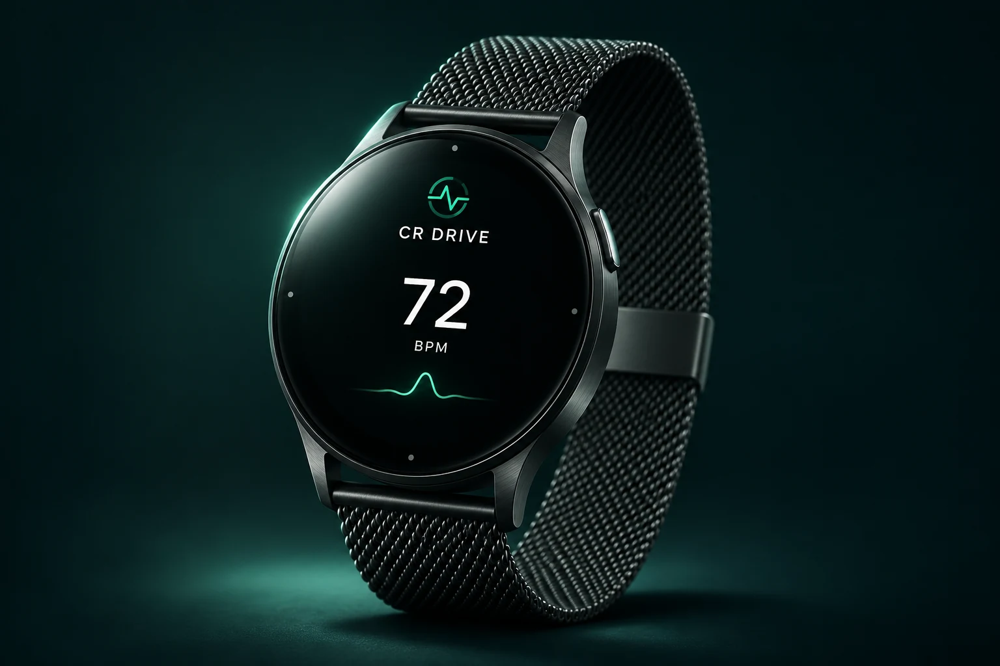
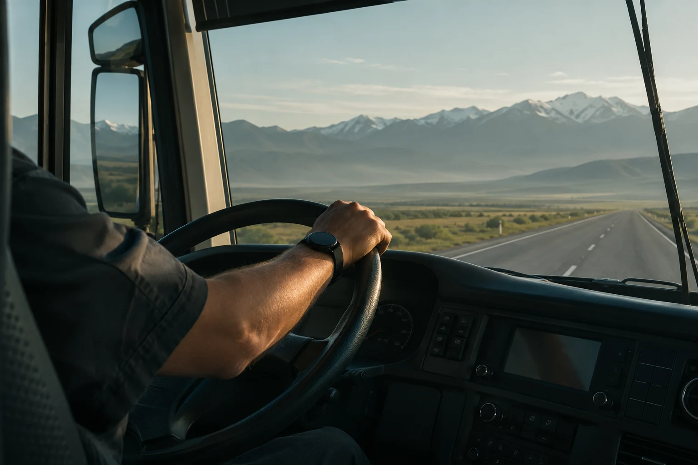

CR DRIVE / DRIVER SAFETY TECHNOLOGY
Безопасность
начинается
с человека.
Вы знаете, где ваш транспорт. Теперь — больше о том, как чувствует себя водитель.

Пульс · маршрут · предупреждения
CR DRIVE WEARABLE / Визуализация концепции устройства
Носимое устройство, мобильное приложение и единая платформа мониторинга.
Узнать о технологии01 / ЧЕЛОВЕК ЗА РУЛЁМ
За каждым маршрутом —
человек.

Скорость и GPS рассказывают о поездке. Физиологические показатели помогают увидеть то, чего нет на карте.
CR Drive разрабатывает систему, которая связывает показатели водителя с контекстом рейса. Чтобы важное изменение стало поводом для внимания, а не осталось незамеченным.
02 / КАК ЭТО РАБОТАЕТ
От сигнала —
к вниманию.
Три части. Одна связанная система.
Устройство на запястье
Считывает пульс во время поездки. Качество контакта с кожей помогает отделять показания от отсутствия сигнала.
Приложение водителя
Соединяет показатели с маршрутом телефона. Водитель видит состояние устройства и уведомления.
Платформа диспетчера
Показывает динамику и события. При изменении показателей помогает вовремя связаться с водителем.
Пульс — часть контекста. Он не позволяет сам по себе определить усталость или поставить диагноз.
03 / ПЛАТФОРМА
Видеть важное.
Реагировать вовремя.
Показатели, маршрут и события в одном рабочем пространстве. Попробуйте сценарии прямо здесь.
Обзор поездки
Динамика пульса
Последние 5 минут04 / ДЛЯ АВТОПАРКОВ
Забота о водителе.
Системный подход.
Начните с пилота на выбранных маршрутах. Проверьте, как данные и уведомления вписываются в работу вашей команды.
Внимание к человеку, которому доверяют пассажиры.
Состав и условия пилота согласуем с вашей командой.
05 / СТОИМОСТЬ
Устройство. Платформа.
Понятная модель.
Ориентиры стоимости из проектного предложения CR Drive. Финальные условия подключения обсуждаются индивидуально.
Устройство CR Drive
Единоразово / за устройство
- Носимое устройство
- Подключение к приложению
- Передача показателей
Доступ к платформе
В месяц / за водителя
- Диспетчерский кабинет
- История показателей
- События и предупреждения
Рассчитайте бюджет команды
↗- Устройства, единоразово
- 450 000 ₸
- Подписка в месяц
- 30 000 ₸
- Устройства + 12 месяцев
- 810 000 ₸
Предварительный расчёт по указанным тарифам, без дополнительных услуг.
ВОПРОСЫ И ОТВЕТЫ
Что важно знать.
Изменение пульса само по себе не доказывает усталость. Система помогает обратить внимание на отклонение и уточнить самочувствие водителя. Алгоритмы расширенного анализа находятся в разработке.
В демонстрации показаны пульс, связь с устройством, заряд и маршрут. В проекте также предусмотрены SpO₂ и температура. Состав показателей и совместимое оборудование уточняются перед пилотом.
Панель должна явно отмечать потерю связи и устаревшие показания. В демо можно проверить этот сценарий: вместо текущего пульса появится прочерк.
Да, обсудите с командой пилот для выбранной группы водителей. Количество устройств, маршруты и критерии оценки согласуются до запуска.
CR Drive позиционируется как система информационной поддержки безопасности. Она не заменяет медицинскую диагностику, предрейсовый осмотр или решение специалиста.
СОЗДАНО ДЛЯ ЛЮДЕЙ В ПУТИ
Следующий маршрут.
С большим вниманием.
Познакомьтесь с CR Drive и обсудите пилот для вашей команды.